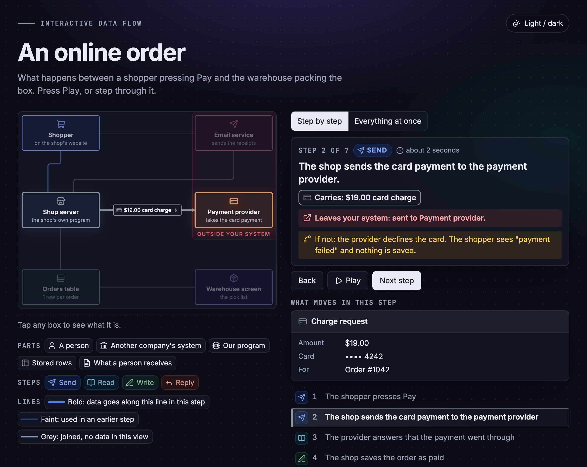
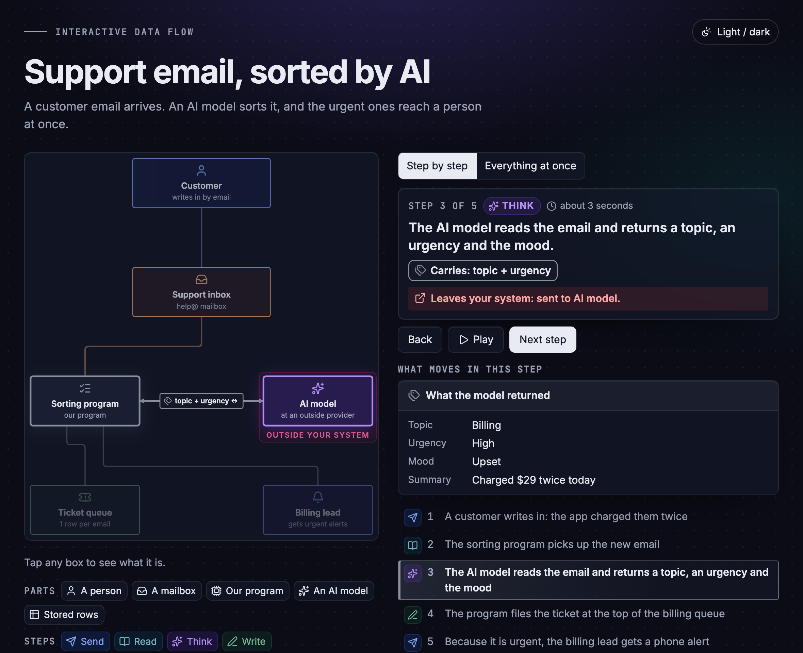
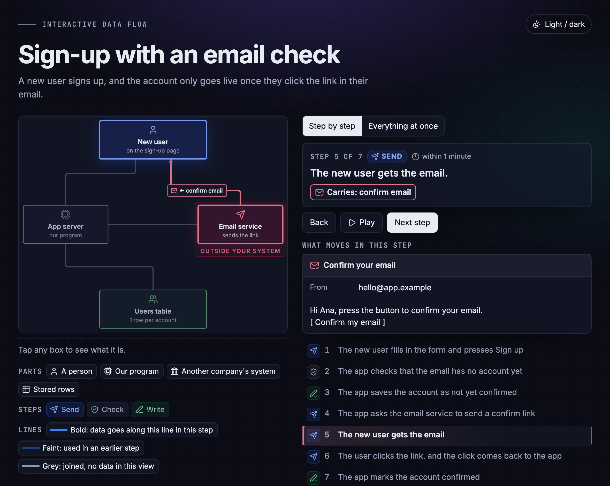

Interactive data flow
Dataflowgram
Interactive data-flow diagrams for any AI agent. Describe the parts and the steps; get a page where each step lights the line that moves, names what is moving, and shows a sample of the real item. Open an example and press Play.

An online order7 steps · What happens between a shopper pressing Pay and the warehouse packing the box. Press Play, or step through it. A notes inbox with AI12 steps · Forward an email to one address, and it is filed for you. Ask a question the same way, and you get the answer back.
A notes inbox with AI12 steps · Forward an email to one address, and it is filed for you. Ask a question the same way, and you get the answer back.

Support email, sorted by AI5 steps · A customer email arrives. An AI model sorts it, and the urgent ones reach a person at once.
Sign-up with an email check7 steps · A new user signs up, and the account only goes live once they click the link in their email.